Nosotros
Nosotros somos un equipo de ecología, conformado por:
- Edsel Yael
- Eybert Alexis
- Royzyy Jesús
- Juan
Datos de nuestro planeta.
El planeta tiene muchos datos interesantes:
- Años de existencia: 4540 millones de años
- Cantidad de agua: 326 millones de millas cúbicas
- Cantidad de agua bebible: 0,025% del total
- Residuos del Hombre: 11.200 millones de toneladas
Como podemos ver, la tierra solo tiene el 0.0025% de agua potable y la cantidad de desechos del hombre, es abismalmente grande. Debemos darnos cuenta del impacto de nuestros estilos de vida con el medio ambiente.
Hechos
Nuestro planeta tierra está enfrentando un cambio climático que puede llevar al incremento de la temperatura global. Lo que conllevaría el deshielo de glaciares, temperaturas extremas tanto para el frío como para las de calor. Segun Citizens' Climate Lobby (2022) todos los combustibles fósiles contribuyen al calentamiento global y aunque no sea tóxico intrinsicamente, es la mayor causa del aumento de la temperatura a largo plazo.
Temperatura global (°C) de la superficie.
Especies extintas por causa de la actividad humana
Nro de hectáreas(millones) de tierra fertil perdida por año
Refugiados climáticos en 2019
Países contaminantes
A continuación se muestran los países que más emisiones de CO2 emiten, según el informe de la Breacha de Emisiones del 2019

Situación actual en Perú
El último día del año, el 31 de diciembre de 2021, el gobierno peruano promulgó la ley que, una vez más, extiende el plazo para la formalización minera. Esta vez la controvertida norma amplía el plazo hasta el 31 de diciembre de 2024.
Con esta decisión, los problemas relacionados con la minería informal e ilegal y un proceso de formalización que parece no tener fin cobran más vigencia que nunca para el 2022.

Otro tema prioritario este año es la protección de los defensores ambientales que desde el 2020 ha cobrado la vida de por lo menos 15 personas en los dos últimos años, varios de ellos líderes indígenas que fueron asesinados por defender sus territorios del avance del narcotráfico.
En este 2022 también se debe poner atención a lo que sucede en ríos y océanos. Durante el 2021 la creación de la Reserva Nacional Dorsal de Nasca permitió avanzar en la conservación del mar peruano, pero aún hay temas pendientes para uno de los espacios marinos más biodiversos del mundo.
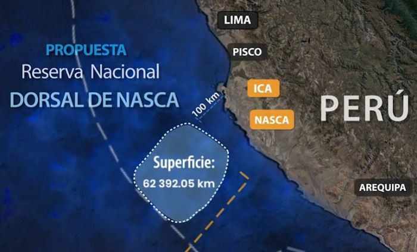En el 2020 Perú alcanzó una cifra récord de deforestación, la más alta de los últimos 20 años, una situación que aleja al país de sus compromisos internacionales como, por ejemplo, la Declaración sobre los Bosques y el Uso de la Tierra, logrado en la COP 26, cuyo objetivo es poner fin a la deforestación para el año 2030.
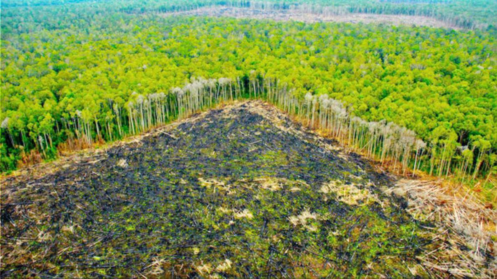Entre el 2001 y 2020 se han perdido 2 636 585 ha, siendo los departamentos de Loreto, San Martín, Ucayali, Junín, Madre de Dios y Amazonas los que concentran más del 77 % de la pérdida de bosques del último año. Para la FAO (s.f) parte de la importancia de los bosques, radica en mantener el balance del flujo de carbono. El aumento de combustibles fósiles y la disminución de bosques contribuye al aumento de temperatura en el globo.
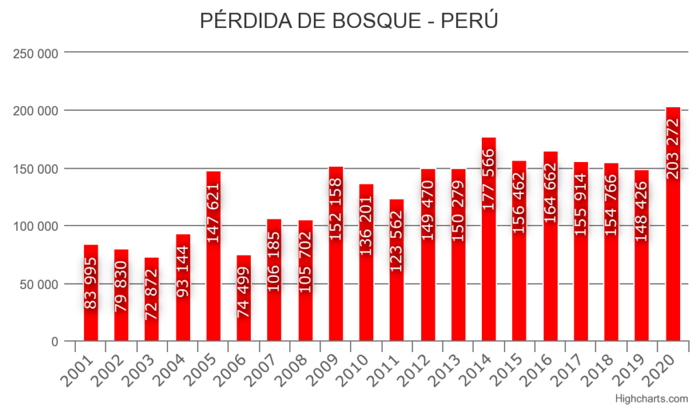un mes del desastre ecológico ocasionado por el derrame de petróleo de la refinería La Pampilla, operada por Repsol, el agua de las playas lucen más limpia y con pocos restos del crudo mientras que las aves han vuelto a volar por el litoral peruano. Sin embargo, las consecuencias del accidente son mayúsculas y navegan en los bajos fondos del mar, aunque ya apenas sean visibles.
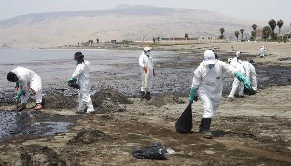“Nuestra experiencia en otros derrames indica que rara vez se puede recoger más del 25% del total de crudo derramado, y entre el 25% que se ha evaporado, aún queda el 50% que está en la columna de agua del océano, ya bien sea desagregado en moléculas que van a parar a las algas, al placton o en el fondo marino, ingerido por animales, en los moluscos” declaró Juan Carlos Riveros
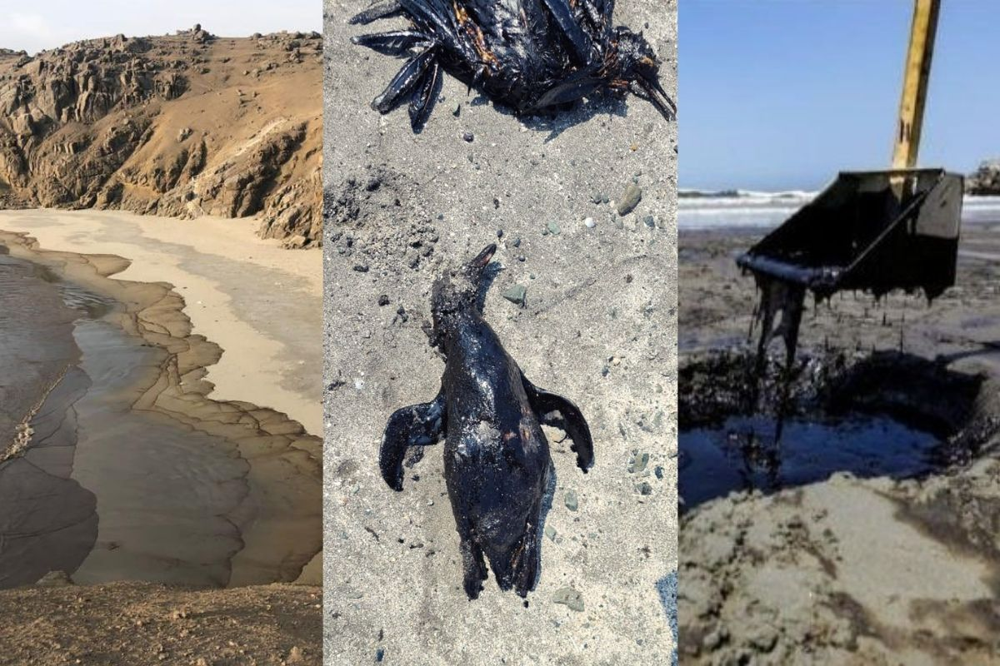Información
Si le interesa la ecología, también puedes visitar los siguientes links para aprender más
Derecho, Ambiente y Recursos Naturales (DAR)
Es una organización civil sin fines de lucro que desde sus inicios ha realizado acciones para contribuir al desarrollo del país a partir del manejo y aprovechamiento sostenible de sus recursos naturales en la Amazonía.
Mongabay Latam
Es una organización de periodismo ambiental independiente en Latinoamérica
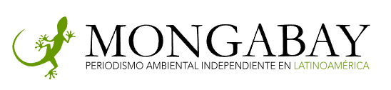
Revista Treehugger
Es una revista que trata sobre varios temas de interés como medio ambiente, innovaciones, noticias recientes acerca de ecológia y medio ambiente.
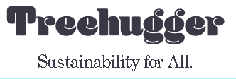
Nature.org
Es un excelente sitio web para aprender de las riquezas que posee Perú
Grandes pensadores
A continuación mostraremos algunos de los dichos de grandes pensadores acerca del medio ambiente
Barry Commoner
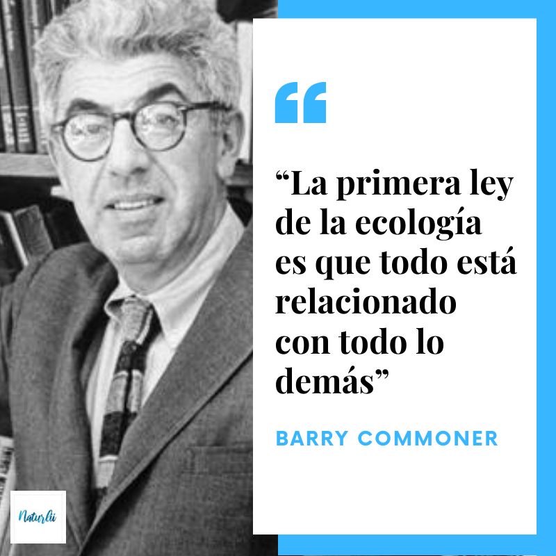Keike Freire
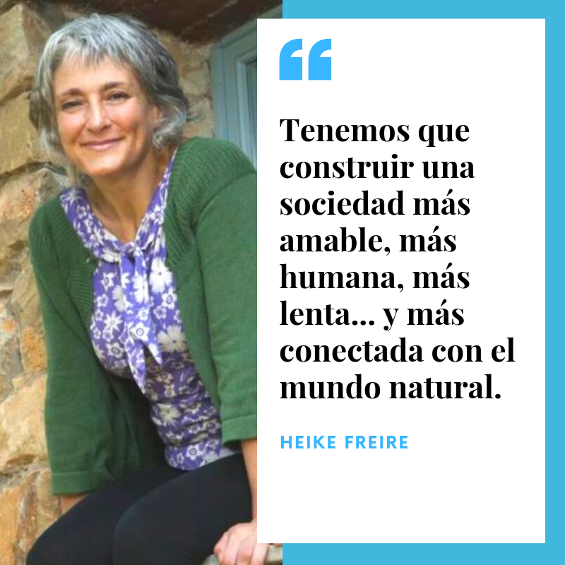Walt Kelly
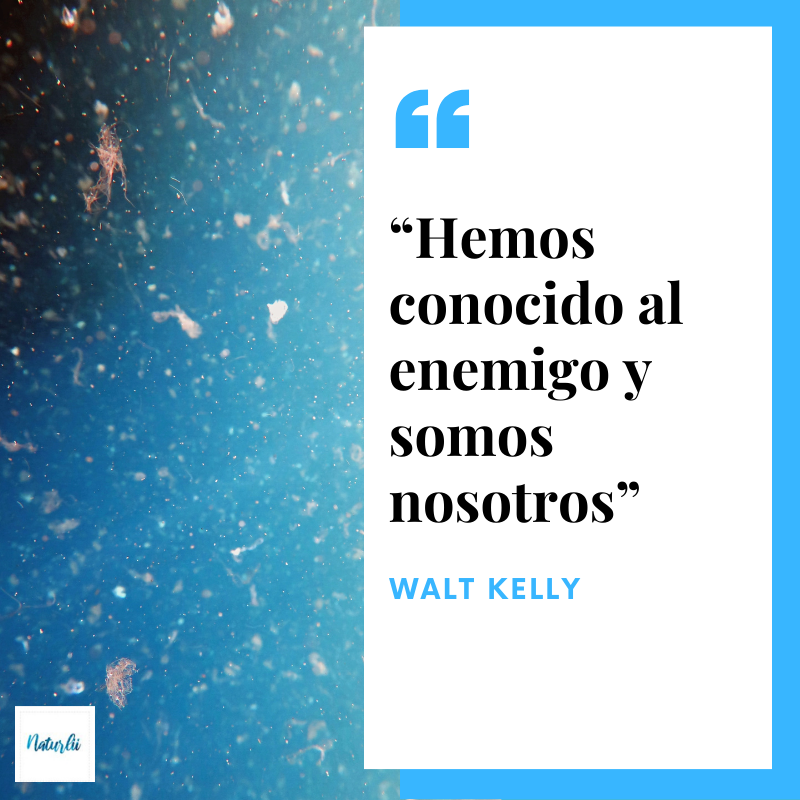Robert Swan
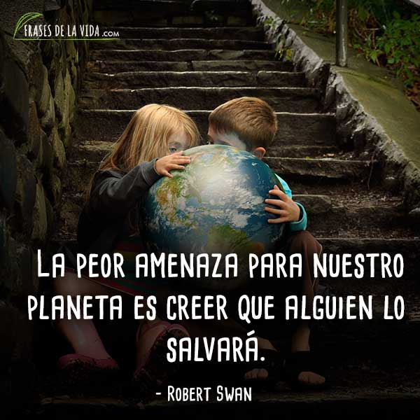Refrencias y Bibliografía
Si deseas ampliar la informacion mostrada en este sitio puedes visitar las fuentes:
- Chávez, L. T. (2021, 29 noviembre). ¿Qué depara el Acuerdo Forestal de la COP26? Human Rights Watch. https://cutt.ly/XXetI92
- EFEverde, R. (2022). El desastre ecológico se esconde en el fondo del mar peruano tras el derrame. EFEverde. https://efeverde.com/el-desastre-ecologico-se-esconde-en-el-fondo-del-mar-peruano-tras-el-derrame/
- Fresneda, C. (2018). Heike Freire, la educadora «verde»: “El eje de todas las asignaturas debe ser el medio ambiente”. ELMUNDO. https://acortar.link/SrVaye
- Kellogg, T. (2021). Beneficios para la salud | Citizens' Climate Lobby. Citizens’ Climate Lobby. https://citizensclimatelobby.org/es/charlitas-laser/impactos-salud/#:%7E:text=Todos%20los%20combustibles%20f%C3%B3siles%20contribuyen,no%20reducen%20el%20CO2.
- Secuestro de Carbono en bosques, su papel en el ciclo global. (s. f.). fao.org. https://www.fao.org/3/y4435s/y4435s09.htm
- UNEP. (2020). The Emissions Gap Report 2020. United Nations Environment Programme.